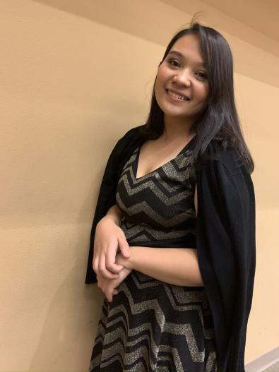

<div class="container-fluid-padding text-light" style="background-color:#485e48">
    <div class="row text-center">
      <div class="col-md-4">
        <br>
        <p><b>Vensan Cabardo</b></p>
        
        <p style="text-align: justify;"> Vensan is constantly on the prowl for challenges to test her skills as a developer. She has a passion for web development as well as graphic design. </p>
      </div>
      <div class="col-md-4">
        <hr class="dark">
        <h4>Check out the Developers!</h4>
        <hr class="dark">
        <p><b>Kami Otero De Owens</b></p>
        
        <p style="text-align: justify;">Kami has been developing for a couple years now and is finally getting the hang of the power of JavaScript. <br> See more of my work at: <a href="https://web.nmsu.edu/~kotero4/" style="color: rgb(190, 233, 253);">Kami's Website</a></p>
        <br>
      </div>
      <div class="col-md-4">
        <br>
        <p><b>Jared Van Natta</b></p>
        
        <p style="text-align: justify; margin: 5px;"> Jared has designed and worked with several published websites and has a fantastic eye for graphic design. </p>
      </div>
    </div>
  </div>
